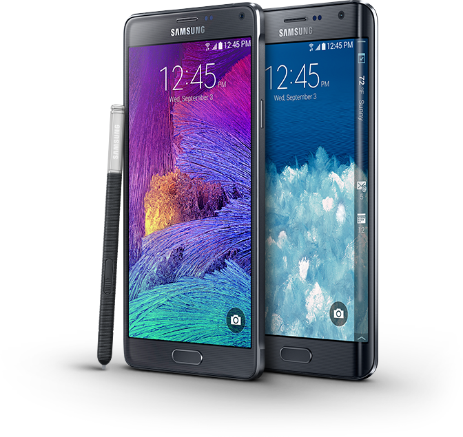

Multimedia Elements
SAMSUMG.COM/NZ uses few multimedia elements mainly with images of their products. It seems that the website emphasize their own new electric gadgets for advertising and to introduce for visitors.
The main page of the website seems to be as simple as other website following modern style,
Moreover, the huge images with a brief line of description could not be simpler.
However, as some of huge images are used on the main page, online visitors have to confront a long scroll. With few impacting images and clear navigation would improve the main page.
